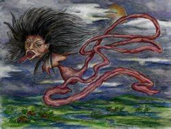

Krasue is a ghost of Thailand, but can appear in other Southeast Asian folklore. She is a very famous ghost who stars in some of her own movies and books. In order to get as famous as she is, she had to scare a lot of people and create some chaos. Krasue is a nocturnal female spirit who manifests as a young, beautiful woman. The only problem is that this “beautiful woman” has her internal organs hanging down from her neck. In order to move from place to place, she hovers above the ground with her organs below. The organs typically include a heart, stomach, and intestinal tract, but she can be represented with more internal organs as well (such as lungs). The intestines are usually spotted with fresh blood and glowing. Her teeth are often represented as vampire-like.
The origin of Krasue takes place in Thailand. Her legend comes from the Angkorian Khmer culture. The story tells of a Khmer princess who was meant to marry a Siamese nobleman after her people were defeated in war, but she was in love with a young man of low status. She was eventually caught with her lover and was sentenced to death by burning by the Siamese nobleman. Before the execution, the princess had a spell cast over her so that her body would be unharmed by the fire. the effect of the spell was delayed, so the princess burned until only her internal organs and head were left. She continued to live as Krasue. The curse that Krasue experiences is that she is always hungry and is forced to go out at night and feast on blood of cattle, chicken, or water buffalo. If blood is not available, she is forced to feed on excrement of the animals. During the day, Krasue lives as a normal person on a body that she stole. She only moves alone at night as a head with intestines trailing below. She must rejoin the body before daybreak. There are three ways to kill a Krasue: you must destroy the body when Krasue is hunting at night and replace it with the wrong body so that Krasue suffers until finally dying, or make it so that she cannot find the body when morning comes, or cut off Krasue’s intestines. There are variations to this story as it has been passed down through centuries between different cultures.